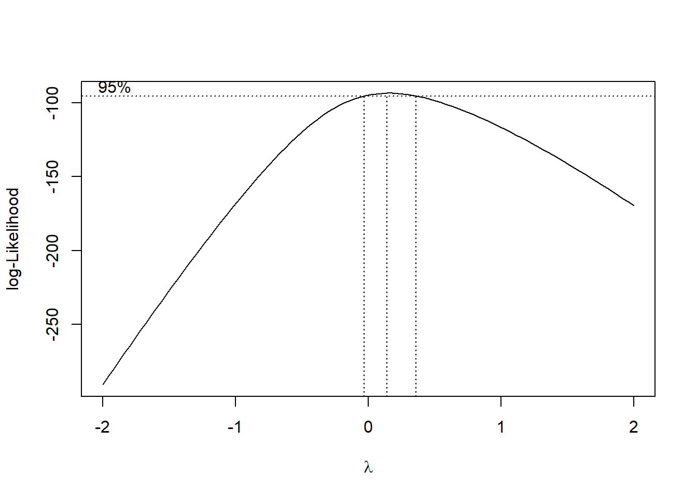

Chapter 3 Model Validation
En del af datasættene er taget fra isdals-pakken, som hører til den lilla bog (isdals = Introduction to Statistical Data Analysis for the Life Sciences).
library(tidyverse)
library(isdals)
library(MASS)
set.seed(435)3.1 Why and How
Most statistical methodology is based on certain assumption, that needs to be fulfilled, otherwise those methods won’t produce valid results. It is therefor very important to check if the assumptions are fulfilled by the model, which is why we do model validation.
The most common assumption to check is if the data is normally distributed. To do this we usually do a QQ-plot of the data, to see if the quantiles follows that of a normal distribution. When working with more complex models it can be necassry to do model validation on the residuals of the model, instead of on the raw data. This is because there has been made asumptions based onthe residuals on not directly on the raw data.
3.2 Sample size of one
When dealing with data that is of sample size one, it is important to check whether the data is (approxymately)-normally distributed. The most common way of doing this is by doing a QQ-plot. In this plot the quantiles of the data needs to lie approximately on the theoretical quantiles of a normal distribution. If the dataset is large, the normality assumptioon can also be checked using a histogram of the data, to see if the histogram matches a normal ditribution. The QQ-plot is generally more reliable.
The Shaprio-Wilk can also be used as a formal test for normality, but we would still recommend looking at a QQ-plot of the data to get a better picture of the outcome of the test (the data can still be normally ditributed even if the Shapiro-Wilk test says otherwise and vice-versa).
3.2.1 Data Example 1: Weight of Crabs
In this data example we look at the weight, in grams, of 162 crabs at a certain age. Here we want to check if the weight data is normally distributed.
data(crabs, package="isdals")
dat1 <- crabs %>% filter(day==1)Histogram of the crab weight data with the curve for a normal distribution with mean 12.76 and standard deviation 2.25
dat1$wgt %>%
hist(density=20, breaks=10, prob=TRUE,
xlab="Weight", ylim=c(0, 0.2),
main="Crab weight histogram")
curve(dnorm(x, mean=mean(dat1$wgt), sd=sqrt(var(dat1$wgt))),
col="black", lwd=2, add=TRUE, yaxt="n")Based on the histogram the crab weight data looks to be normally distributed.
QQ-plot of the crab weight data with a dotted line representing the true normally distributed values.
qqnorm(dat1$wgt)
qqline(dat1$wgt, col = "red", lwd = 1, lty = 2)The QQ-plot also indicate that the crab weight data is normally distributed.
3.2.2 Data Example 2: Salary Data from Connecticut - log transformation
Here we look at the salary of employees in the public sector in Connecticut. This data needs to be log transformed to be normal.
load("data/4_2_connecticut2017.Rdata")Histogram of the salary data with the curve for a normal distribution with mean 85577.22 and standard deviation 32813.17
hist(paydata2017$Pay, density=20, breaks=20, prob=TRUE,
xlab="Salary",
main="Salary histogram")
curve(dnorm(x, mean=mean(paydata2017$Pay), sd=sqrt(var(paydata2017$Pay))),
col="black", lwd=2, add=TRUE, yaxt="n")Here we can see that the mean of the data looks off compared to the true normal distribution, and the data has a long tail for the high values, i.e. the data doesnt look normally ditributed.
QQ-plot of the salary data with a dotted line representing the true normally distributed values.
qqnorm(paydata2017$Pay)
qqline(paydata2017$Pay, col = "red", lwd = 1, lty = 2)As the quantiles of the data are heavily curved and doesnt follow the dotted line, the data is not normally distributed.
Now we will log-transform the salary data and check if this new transformed variable is normally distributed.
Histogram of the log-transformed salary data with the curve for a normal distribution with mean 11.29 and standard deviation 0.35
hist(log(paydata2017$Pay),
density=20, breaks=20, prob=TRUE,
xlab="Salary",
main="Salary histogram (log-transformed)")
curve(dnorm(x, mean=mean(log(paydata2017$Pay)), sd=sqrt(var(log(paydata2017$Pay)))),
col="black", lwd=2, add=TRUE, yaxt="n")Here we see the histrogram fits nicely to the bell curve.
QQ-plot of the salary data with a dotted line representing the true normally distributed values.
qqnorm(log(paydata2017$Pay))
qqline(log(paydata2017$Pay), col = "red", lwd = 1, lty = 2)The quantiles of the data follows the theoretical dotted line nicely, which strongly indicates that the log-transformed data is normal.
3.3 Sample size of two
Now we will look at data that is of sample size two. Here we don’t check if the full data is normal but instead check whether each individual sample is normally distributed.
The typical analysis in this scenario is to either use the t-test or the Welch t-test. When using the t-test we assume the variance of the two populations are equal. This can be checked by fitting a linear model on the data and looking at the residual plot (this is shown in data example 4). If we don’t assume the variances are equal then we can use the Welch t-test.
3.3.1 Simulated data example
In this example we will simulate data for two groups: treat = 0 and treat = 1. The first group will be normally distributed with mean 0 and sd 1, and the second group will also be normally distributed with same sd but with mean 4.
x <- rnorm(50, 0,1)
y <- rnorm(50, 4,1)
X <- data.frame(treat=rep("0",50),value=x)
Y <- data.frame(treat=rep("1",50),value=y)
df <- rbind(X,Y)First we will do a QQ-plot of all the data:
qqnorm(df$value)
qqline(df$value, col = "red", lwd = 1, lty = 2)Here we can see that the data is not normally distributed.
Now we will do a QQ-plot of the data for each group:
qqnorm(df$value[which(df$treat=="0")])
qqline(df$value[which(df$treat=="0")], col = "red", lwd = 1, lty = 2)qqnorm(df$value[which(df$treat=="1")])
qqline(df$value[which(df$treat=="1")], col = "red", lwd = 1, lty = 2)Here we see that although the full data is not normally distributed, the data within each group is.
3.3.2 Data Example 3: Lean body mass and physical strength for men and women
Now we will look at data of the physical strength for men and women. As this is two sample data, we will be doing QQ-plots for both populations individually, as we assume that the data within each population is normally ditributed.
strength <- read.table("data/4_1_strength.txt", header=TRUE)In this dataset there are very few datapoints, so a histogram of the data is not a good idea.
QQ-plot of the strength data, where sex=women, with a dotted line representing the true normally distributed values.
qqnorm(strength$strength[which(strength$sex=="women")])
qqline(strength$strength[which(strength$sex=="women")], col = "red", lwd = 1, lty = 2)QQ-plot of the strength data, where sex=men, with a dotted line representing the true normally distributed values.
qqnorm(strength$strength[which(strength$sex=="men")])
qqline(strength$strength[which(strength$sex=="men")], col = "red", lwd = 1, lty = 2)3.4 Linear nomral models (regression, ANOVA, ANCOVA)
A linear model is of the from y_i=+ x_i + e_i, where it is assumed the residuals, e_1,…,e_n are iid. normal, with mean 0. Because of this, we do model validation on the residuals and not on the raw data, i.e. we need to check if the residuals are normally distributed with mean 0, same standard deviation and are independant.
The two model validation plots we will be doing are a residual plot and a QQ-plot. In the residual plot we want check if the residuals of the model have the same variance, which is true of the residuals are scattered equal under and above the horizontal line at y=0. The QQ-plot checks for normality where the quantiles from the model (the dots in the plot) needs to follow the theoretical quantiles of the normal ditribution (the dotted line).
3.4.1 Data Example 4: pillbugs (oneway ANOVA)
An experiment of different stimuli was carried out with 60 pillbugs. The bugs were split into 3 equally sized groups: exposure to strong light, exposure to moisture and a control group. For each bug it was registered how many seconds it used to move six inches.
data(pillbug)We first fit the linear model
lm(time~group, data=pillbug)##
## Call:
## lm(formula = time ~ group, data = pillbug)
##
## Coefficients:
## (Intercept) groupLight groupMoisture
## 173.5 -150.0 -4.3Now we need to check that the residuals have equal variance and that they are normally ditributed.
plot(lm(time~group, data=pillbug),1)plot(lm(time~group, data=pillbug),2)The first plot, “resiudals vs Fitted”, we can check if the residuals have the same standard deviation, but here we can clearly see that the two groups have different variation. The second plot, “qq-plot”, checks for normality. Here the points should be on the dotted line, but as many of them are far away from the line, we can say that the residual are not normally distributed.
Now we fit a new linear model where the respons variable time has been log-transformed.
lm(log(time)~group, data=pillbug)##
## Call:
## lm(formula = log(time) ~ group, data = pillbug)
##
## Coefficients:
## (Intercept) groupLight groupMoisture
## 4.99207 -2.00211 -0.01266We again perform the same model validation plots
plot(lm(log(time)~group, data=pillbug),1)
plot(lm(log(time)~group, data=pillbug),2)After the log-transformation we now see on the “residual vs fitted” plot, that the residuals seem to have the same standard deviation. The QQ-plot also looks nicer but still not great.
Above we transformed the data using a log-transformation. Another way is using the boxcox function. This function says whether to log-tranform the data or use another transformation. If the 95% confidence contains lambda=0 it is best to use the log transformation, and otherwise it is best to use the transformation x^.
lm(time~group, data=pillbug) %>% boxcox() #the boxcox
Here we can see that the boxcox tells us to use a log transformation of the data, but we will demonstrate the other transformation aswell.
Model validation plots where time has been transformed using boxcox(). Normally when choosing we round up or down to the nearest “nice” number. Here we choose /3:
lambda <- 1/3
plot(lm( time^lambda ~group, data=pillbug),1)plot(lm( time^lambda ~group, data=pillbug),2)Here the residuals look worse for this transformation than the log transformation, and the QQ-plot looks about the same.
Now we want to check if the response variable time is normally distributed.
qqnorm(pillbug$time)
qqline(pillbug$time, col = "black", lwd = 1, lty = 2)In the qq-plot we see that the lower quantiles is way off the theoretical true quantiles, which indicates that time is not normally distributed. We therefore now try and log-transform the variable to see if the transformed variable is normally distributed:
qqnorm(log(pillbug$time))
qqline(log(pillbug$time), col = "black", lwd = 1, lty = 2)Now the lower quantiles are better, but the upper quantiles are now off by a considerable amount. From these two QQ-plots it is not clear whether a log-transformation is better than the original variable.
3.4.2 Data Example 5: Lean body mass and physical strength for men and women (continued)
Fit model og lav de relevante plots. Her set alt godt ud.
model <- lm(strength ~ sex + lean.body.mass, data=strength)plot(model,1)plot(model,2)
3.4.3 Data Example 5: birthwt
Alternativ til eksemplet ovenfor. De skal nok ikke begge være der, men lav evt begge sæt plots i første omgang.
Data fra MASS-pakken, så læs om det på hjælpesiden. Fit en “lidt tilfældig model” (sådan skal det ikke beskrives) og lav de relevante plots. Her set alt godt ud.
model <- lm(bwt ~ lwt + smoke + age + ht, data=birthwt)plot(model,1)plot(model,2)3.5 Miscellaneous
3.5.1 Intepretation of results when transforming
Transforming data is a tradeoff between getting normally distributed data and interpretation of the results. When transforming data you cannot make statements about the means estimated by the model, and the differences of the means. Instead we can make statements about the ratio of the estimated difference in means. The p-values estimated by the model also carry directly over to the non-transformed data.
In the Pillbug example we log transformed our data:
lm(log(time)~group, data=pillbug)##
## Call:
## lm(formula = log(time) ~ group, data = pillbug)
##
## Coefficients:
## (Intercept) groupLight groupMoisture
## 4.99207 -2.00211 -0.01266Here the mean log(time) of the control group is 4.99 and the mean difference between control and Light is -2.0. This means the ratio of means of the original populations is estimated to be exp(-2.0)≈0.135, i.e. the mean time for group=Light is about 0.135 times smaller than the control group.
3.5.2 Boxcox
When the data is in need for a transformation it can be hard to know which transformation to choose. Here the boxcox function can be of great help. Given some linear model, it can say which tranformation that would suit the data best. The output of the function is a value and a confidence interval. If 0 is contained in the confidence interval, the function suggests to use a log-transformation. If not, the function suggests to use x^{} (where c is the data that needs transformation) as the tranformation. Here we recommend to not use the exact value of , but the nearest “nice” number, i.e. 1/3, 1/2, 1, 2 etc.
For an example of using Boxcox see “Data Example 4: pillbugs” in this document.
3.5.3 Shapiro Wilk hypothesis test for normality
Throughout this document we have used visual inspection to asses the normality of the data, but another method is the Shapiro Wilk hypothesis test. The advantage of this test is that we get a p-value, so we can make a more “formal” conclusion about normality. The disadvantage is that tests like this are very sensitive to sample size. Therefore when using this test we still advice to use the visual methods described above, to reach a better conclusion.
Here we will perform the Shapiro Wilk test on the simulated data from the “simulated data example”. First we will perform it on the data for both treatsments (which is not normally ditributed) and then on only one treament (which is normal)
shapiro.test(df$value)##
## Shapiro-Wilk normality test
##
## data: df$value
## W = 0.92398, p-value = 2.303e-05Here the p-value is very small which indicates that the distribution of the data is significantly different from a normal distribution.
shapiro.test(df$value[which(df$treat=="0")])##
## Shapiro-Wilk normality test
##
## data: df$value[which(df$treat == "0")]
## W = 0.98717, p-value = 0.8593Here the p-value is well above 0.05 which indicates that the distribution of the data is not significantly different from a normal distribution.
Now finally we want to show the disadvantage of the method. Here we generate 20 uniformly distrubted data points between -1 and 1:
unifdata <- runif(20, -1,1)
shapiro.test(unifdata)##
## Shapiro-Wilk normality test
##
## data: unifdata
## W = 0.92036, p-value = 0.1007Here the p-value is bigger than 0.05 which indicates that the data is not significantly different from a normal distribution, i.e. the test says that the data is normally distributed which it isn’t. Now for a qq-plot of the data:
qqnorm(unifdata)
qqline(unifdata, col = "red", lwd = 1, lty = 2)The tails of this QQ-plot are very far off from the dotted line, which in combination with the few data points, would make us hesitant to call this data normally distributed. Not to say that this QQ-plot couldn’t be from a normal distribution, but just that we can’t for sure conclude that it is/isn’t normally distributed, which we might do only based on the p-value from the Shapiro Wilk test. To summaries the this example: From the Shapiro Wilk test we could be tempted to conclude that the data is normally distributed, but then looking at QQ-plot of the data we would be more hesistant to make that conlcusion.